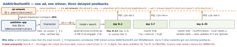

security · folio
In one line: Two different systems. ATT is a permission for tracking — linking data from your app with other companies’ data for ads or ad measurement, or sharing it with a data broker; unless the user taps Allow, the IDFA is all zeros. AdAttributionKit (iOS 17.4+, successor of SKAdNetwork) is measurement without permission: the device picks the winning ad and sends a delayed, signed, crowd-anonymised postback with no user or device ID.
Download PDF Print view LaTeX source


ATT
- Tracking = the linking, whatever the identifier: ads targeted with other companies’ data; e-mail lists / ad IDs to networks for retargeting; location to a broker; an SDK in your app that combines your users’ data with other apps’ — even if you don’t use it that way. Not tracking: joins done only on device; a broker used solely for fraud / security; credit agencies.
ATTrackingManager.requestTrackingAuthorization(callback orasync) +NSUserTrackingUsageDescription; needed for the IDFA since iOS 14.5. Status:notDetermined·restricted·denied·authorized.- No prompt — the completion runs at once — when the app is not
UIApplicationStateActive, in an extension, tracking is restricted, the global “Allow Apps to Request to Track” is off, or a request is pending. Dismissed →notDetermined: ask later. - IDFA (
ASIdentifierManager): a UUID only whenauthorized; else (and in the Simulator)00000000-.... Re-read, never store. IDFV (identifierForVendor): one value per vendor per device; new after all the vendor’s apps are deleted;nilafter reboot until first unlock. First-party use only. - Fingerprinting is banned whatever the answer (license agreement): no device ID derived from device / network / browser traits — an SDK doing it gets you rejected. 5.1.2(i): no gating, no reward for Allow; a primer may explain, never trick.
- Tracking domains (
NSPrivacyTrackingDomains, iOS 17+): without consent, requests to them fail — keep tracking and non-tracking endpoints on separate hosts. - EU (current docs): after an answer, no new prompt for a year; FR, DE, IT, PL, RO get a full-page sheet (
NSUserTrackingMarkdownUsageDescription, 27.2 beta).
Example — ask when active; report value without asking
// from an ACTIVE scene (after onboarding) - not didFinishLaunching
func idfaIfAllowed() async -> UUID? {
let s = await ATTrackingManager.requestTrackingAuthorization()
guard s == .authorized else { return nil } // zeros anyway
return ASIdentifierManager.shared().advertisingIdentifier
}
// advertised app: at first launch, then per milestone. No ATT.
// the 6-bit fine value (0...63) is YOUR schema
func reached(_ fine: Int, big: Bool) async {
try? await Postback.updateConversionValue(fine,
coarseConversionValue: big ? .high : .low,
lockPostback: false) // true = send this window now
}AdAttributionKit
- StoreKit-rendered ads (
SKOverlay,SKStoreProductViewControllergiven the impression) record by themselves. Custom-rendered:AppImpression(compactJWS:); click =UIEventAttributionViewover the ad +handleTap()(throws without a real tap); view =beginView()/endView(), 26.2+handleView(). - Rules (WWDC25, Info.plist
AdAttributionKitConfigurations): window view 1–7 d, click 1–30 d, global or per network; cooldown 0–720 h so a later ad can’t steal a conversion. - Re-engagement (iOS 18):
handleTap(reengagementURL:)with the advertised app’s universal link opens it; the query holdsPostback.reengagementOpenURLParameter. 18.4: overlapping re-engagement windows told apart by a conversion tag (PostbackUpdate); Settings can create development postbacks. - vs SKAdNetwork (StoreKit, 11.3; v4.0 in 16.1 added 3 windows + coarse): App Store only,
SKAdNetworkItems,updatePostbackConversionValue, copies to/.well-known/skadnetwork/.... AdAttributionKit adds alternative marketplaces (EU), re-engagement, JWS. Network IDs work in both; SKAdNetwork updates are mirrored into it; Apple now recommends AdAttributionKit.
What teams actually do
- Consented users: IDFA to an MMP (mobile measurement partner), user-level attribution.
- Everyone: the network / MMP verifies each postback’s signature and aggregates by campaign (
source-identifier) server-side. The 6 bits are a designed schema (revenue buckets, funnel steps) with coarse mapped onto it; lock early = faster signal, less information. - Apple Ads:
AAAttribution.attributionToken()(AdServices, 14.3+), POSTed within 24 h.
Traps
- Asking in
didFinishLaunching: not active yet → no prompt, nothing learned. - “We use IDFV / hashed e-mail, so no ATT” — tracking is the linking, not the ID.
- “The SDK tracks, not us” — its behaviour is yours: ATT, label, manifest.
- Expecting per-user or real-time attribution — aggregate, 24 h+ late, tier-limited.
- No
updateConversionValueat first launch — the conversion window never starts. - ATT “Allow” is not GDPR consent — two separate duties.
Remember
“ATT asks before you link; AdAttributionKit counts without knowing who.” Windows 2 / 7 / 35 days; fine value only in the first; 6 bits.